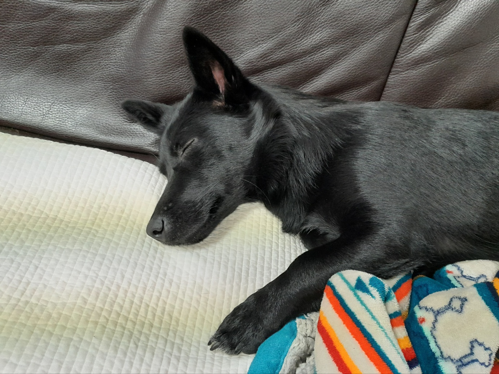

오동재
서울특별시 강남삼성병원에서 태어나, 잠깐의 타지생활을 제외하고 20년 넘게 줄곧 경기도 성남시에서 살았다. 현재 <성공회대학교 소프트웨어공학과>에서 소프트웨어공학 및 컴퓨터공학을 전공 중에 있으며 개발자 지망생이다. 최근 동아리 멋쟁이사자처럼에 들어가 활발한 활동을 이어나가고 있다.
2023년도 1학기 수강 과목
- 웹 프로그래밍
- 컴퓨터 그래픽스
- 백엔드 프레임워크
- 크로스플랫폼 모바일 프로그래밍
- 컴퓨터 네크워크
- 웹 개발 입문
- 고급자바 프로그래밍
- 자료구조
응원 메세지 보내기
Favorites
| 랭킹 | 사진 | 종류 | 설명 |
|---|---|---|---|
| 1 |  | 콩순이 | 군대에서 전역하면서 데려온 우리집 강아지. 발냄새가 고소하다. |
| 2 |  |
짬뽕 | 진득한 국물의 해물 짬뽕을 좋아함. 아직 우리 동네 "뿅의 전설" 짬뽕을 이기는 짬뽕은 먹어본 적이 없음 |